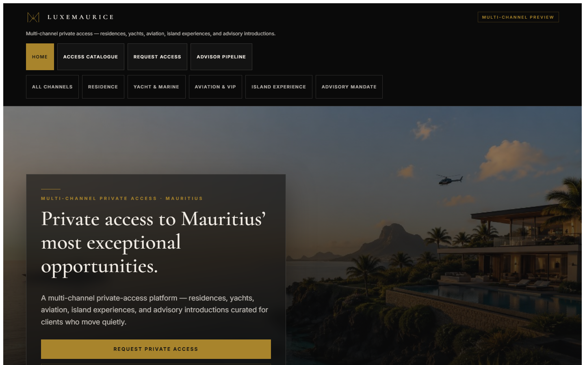
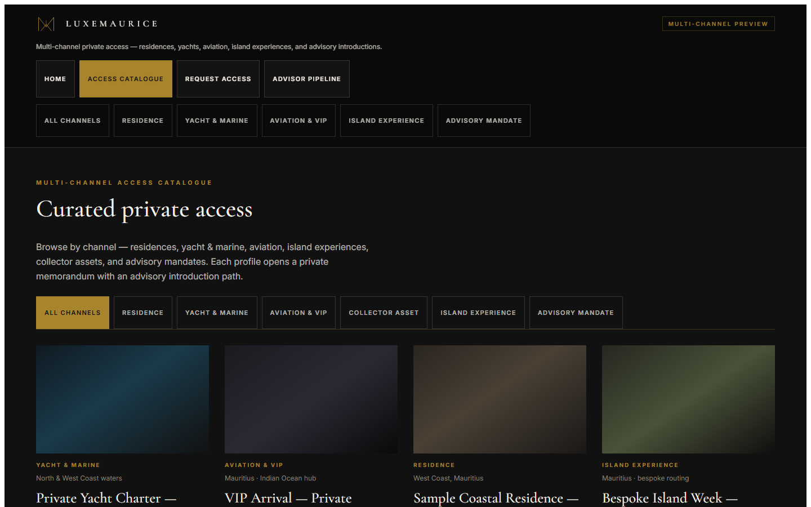
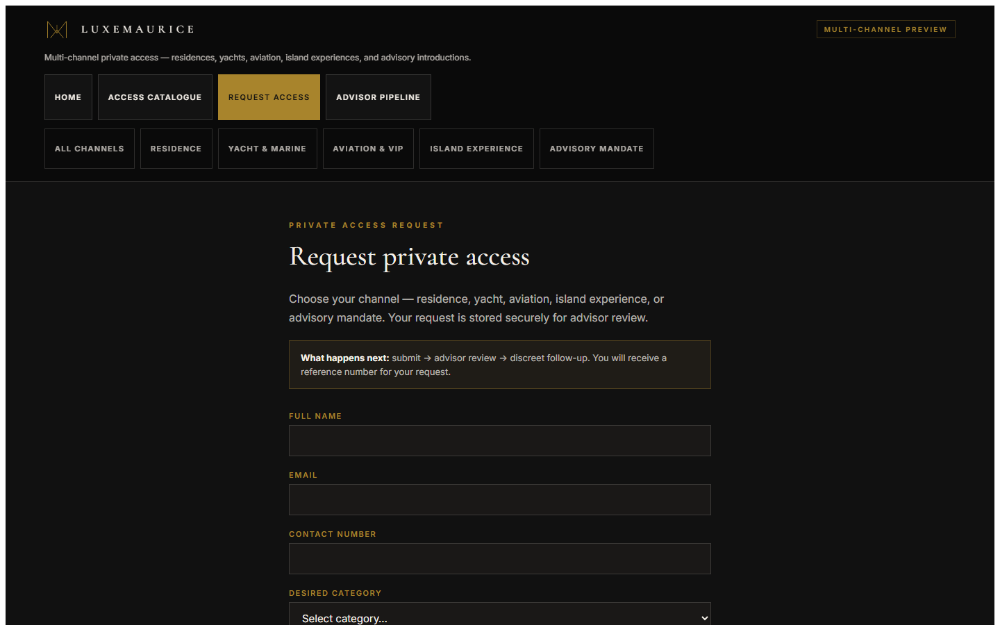
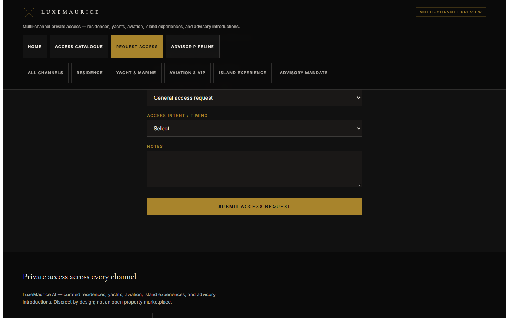
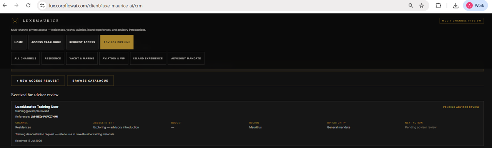
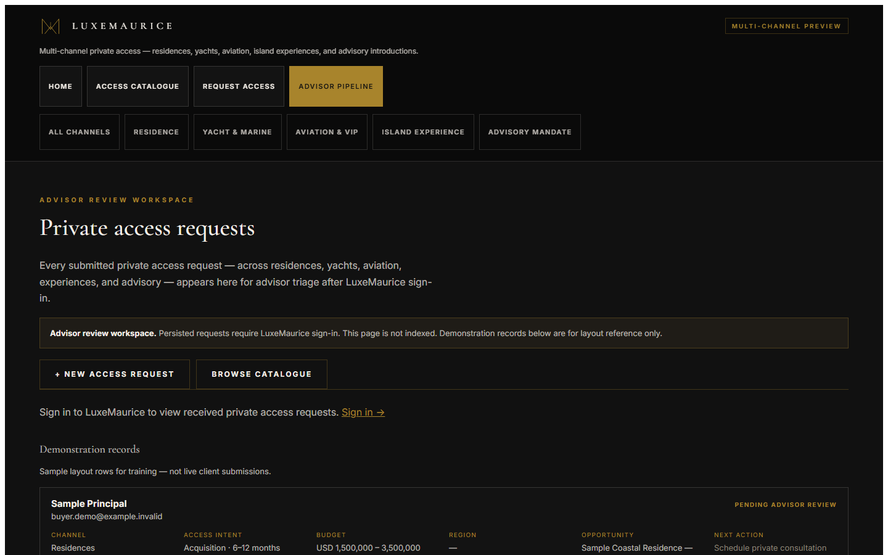
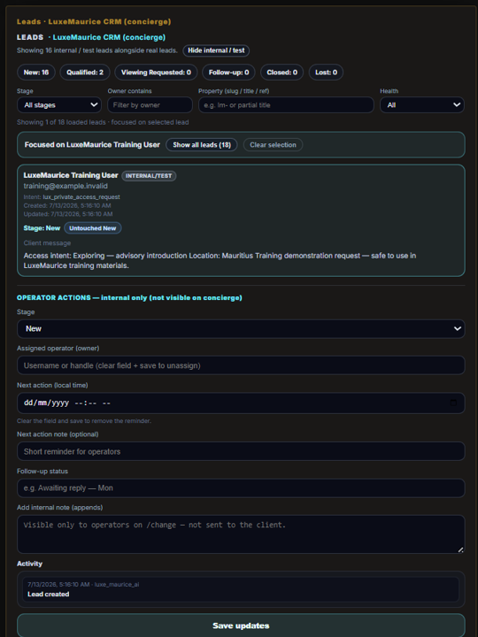

1. Pack purpose
Explain the live Private Access Request journey end to end: client submission, advisor review, operator lead management, and honest current limitations - so LuxeMaurice can train against the real platform.
2. Intended recipient
Jan / LuxeMaurice, after Anton explicitly approves client-send preparation and (separately) any actual external send.
3. Current product capabilities
| Capability | Live today |
|---|---|
| Private Access Request form | Yes - /client/luxe-maurice-ai/buyer |
On-screen LM-REQ-… reference | Yes |
| Authenticated Advisor Pipeline (read-only review) | Yes - /client/luxe-maurice-ai/crm |
| Signed-out privacy (no persisted client detail) | Yes |
| Operator lead workflow in Change Console | Yes - /change |
| Focused selected-lead list + OPERATOR ACTIONS | Yes |
Live surfaces
https://lux.corpflowai.com/client/luxe-maurice-aihttps://lux.corpflowai.com/client/luxe-maurice-ai/propertieshttps://lux.corpflowai.com/client/luxe-maurice-ai/buyerhttps://lux.corpflowai.com/client/luxe-maurice-ai/crmhttps://lux.corpflowai.com/change
Short aliases such as /private-opportunities are not the live routes for this pack.
4. Current limitations
- Advisor Pipeline does not edit stage or notes - it is a review surface.
- Outbound email / WhatsApp / SMS automation is not live.
- Follow-up after submission remains human-led.
- Automated client confirmation and advisor notification are not live.
5. Advisor workflow summary
- Sign in to the LuxeMaurice tenant on
lux.corpflowai.com. - Open Advisor Pipeline (
/client/luxe-maurice-ai/crm). - Review persisted requests under Received for advisor review.
- Treat Demonstration records as layout examples only.
- Do not expect outbound messaging from this screen - contact remains human-led.
6. Operator workflow summary
- Open
/change. - Locate LEADS · LuxeMaurice CRM (concierge).
- Select a lead - the list focuses on that row.
- Use OPERATOR ACTIONS directly below the focused lead.
- Update stage, owner, next action, or notes where supported.
- Use Show all leads, Clear selection, and Focus list on this lead as needed.
7. Graphics 01 - 08
Presentation files from ../05-graphics/captures/. Graphic 06 is BROWSER_CHROME_CROPPED. Graphic 08 is cropped to the training lead and OPERATOR ACTIONS. Fictional training data only.

01-landing-page.png

02-private-opportunities.png

03-private-access-request-form.png

04-request-submitted-reference.png

05-advisor-sign-in-prompt.png

06-advisor-pipeline-live-request.png

07-demonstration-records.png

08-change-console-lead-workflow.png
8. Complete guides
9. Training video scripts
10. Anton’s requested changes
Record and track corrections in ANTON_REVIEW_CHANGES.md using AR-* rows. Revision loop documented in review/README.md.
Review questions
- Is the client-facing tone appropriate?
- Are the advisor steps accurate?
- Are the operator steps accurate?
- Are any screenshots unclear?
- Is any confidential information visible?
- Are the stated limitations acceptable?
- Is the pack ready for Jan?
11. Final approval checklist
Leave items unchecked until Anton confirms.
- [ ] Anton reviewed the complete review edition
- [ ] Anton changes recorded (if any)
- [ ] Requested changes completed
- [ ] All eight graphics approved
- [ ] Fictional-data and privacy review complete
- [ ] Guides match current live behaviour
- [ ] Limitations stated accurately
- [ ] Approved for client-send preparation
- [ ] Approved for actual external send
- [ ] Pack sent to Jan